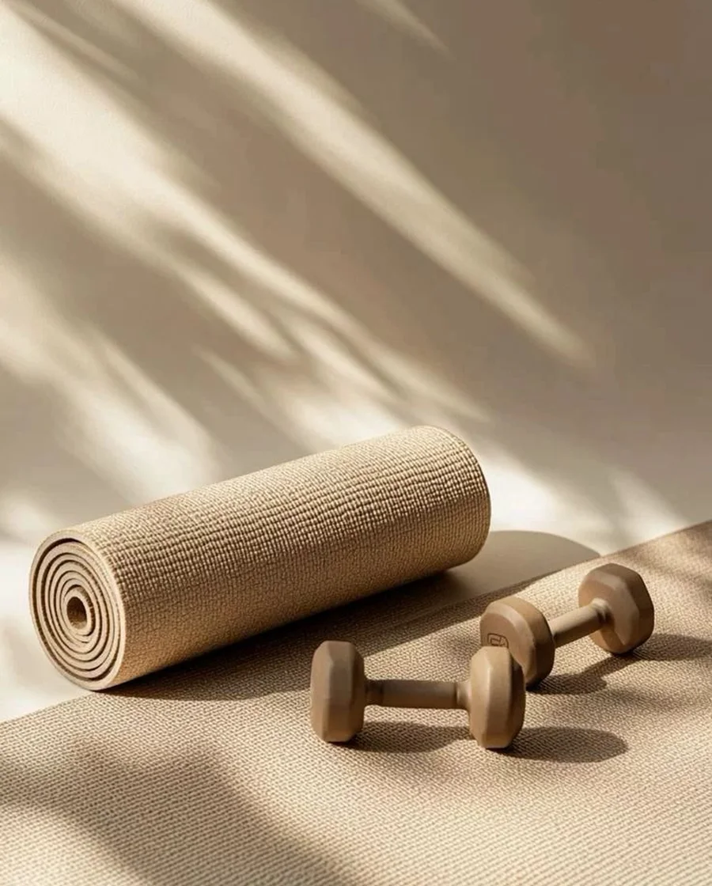
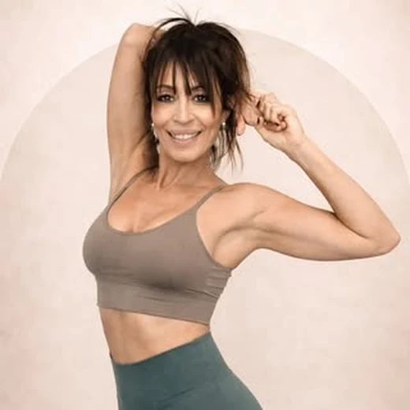
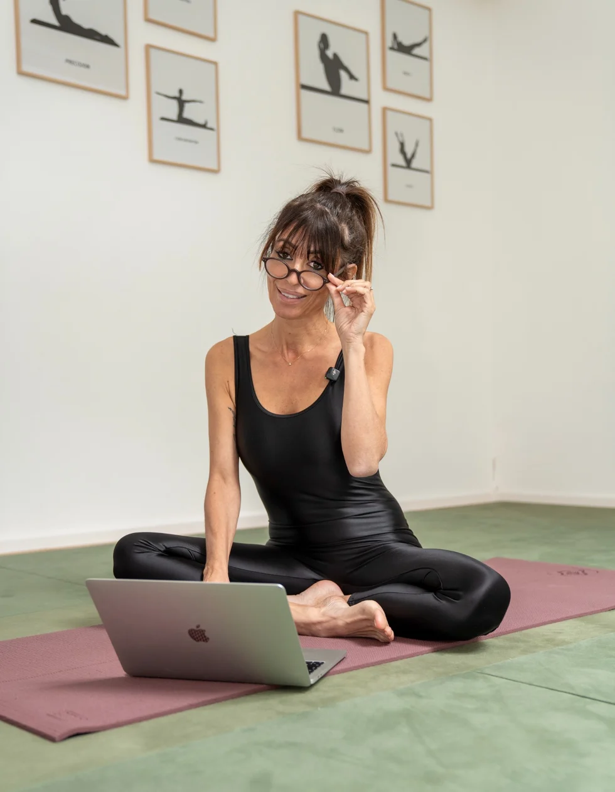
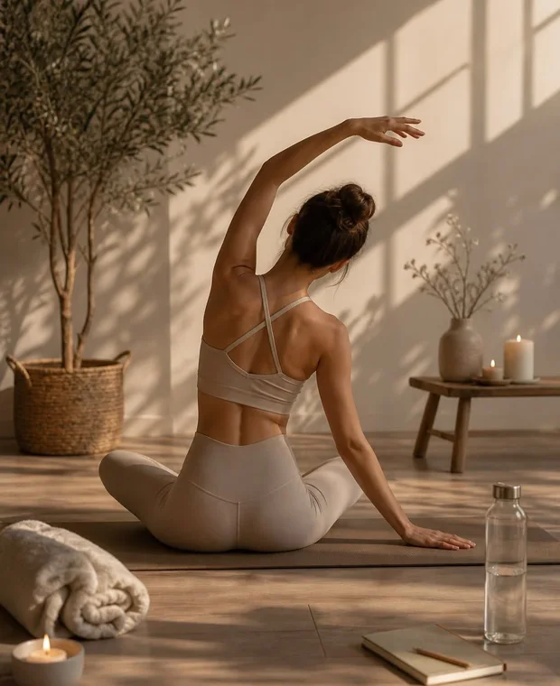
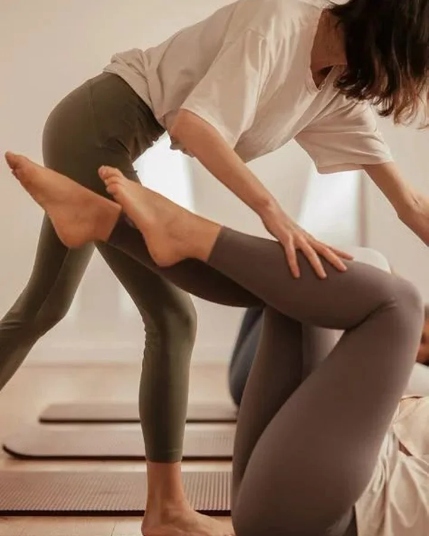
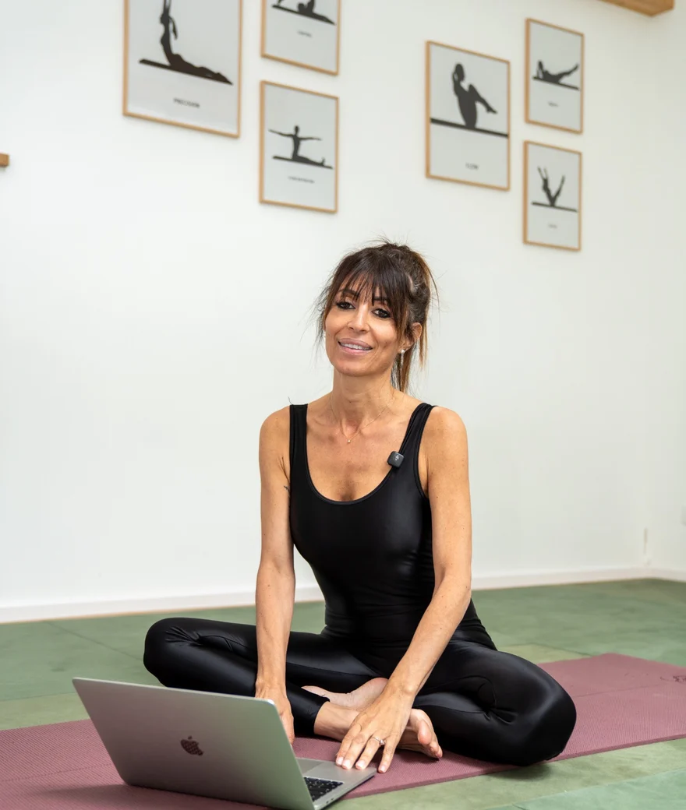
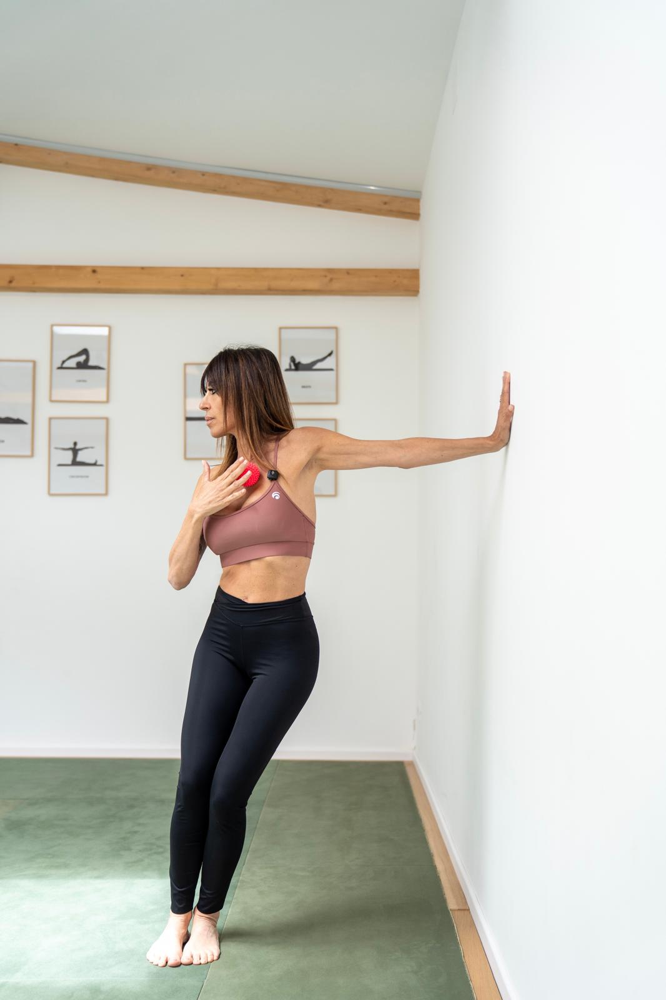
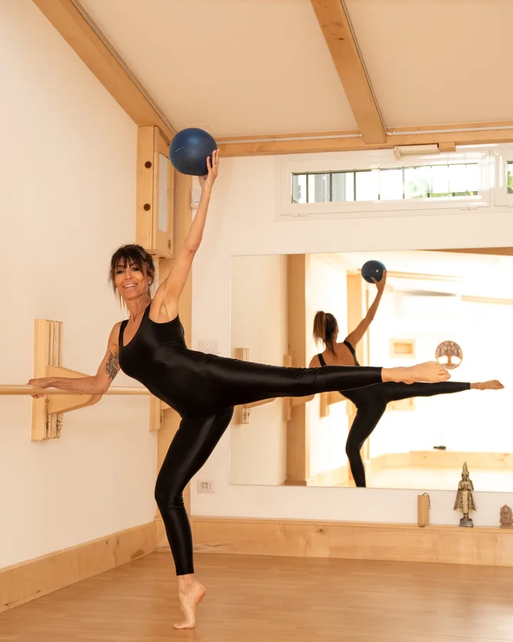
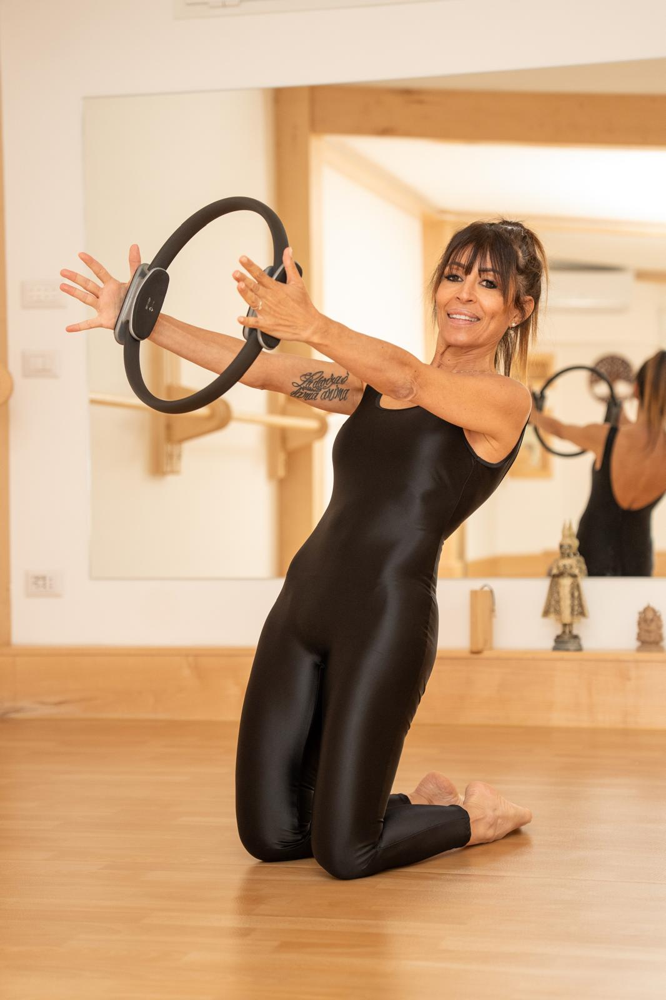

Ascolto
Ogni percorso nasce dall'osservazione e dall'ascolto. Il lavoro viene adattato alle esigenze, agli obiettivi e al momento di vita di ogni persona.
Pilates in Testa · Michela Morini
Ti aiuto a migliorare postura, forza e mobilità attraverso un metodo di Pilates personalizzato, costruito sulle esigenze del tuo corpo.


Pilates personalizzato per sviluppare forza, equilibrio e consapevolezza attraverso il movimento.

Ogni percorso nasce dall'osservazione e dall'ascolto. Il lavoro viene adattato alle esigenze, agli obiettivi e al momento di vita di ogni persona.

Ogni esercizio ha uno scopo. Postura, respirazione e controllo si integrano in un movimento consapevole ed efficace.

I risultati nascono da un lavoro costante e sostenibile nel tempo, costruito passo dopo passo.
Percorsi
Obiettivi, esigenze e possibilità reali della persona diventano il punto di partenza della lezione.
Studio virtuale
Lezioni in diretta ovunque tu sia. Un percorso personalizzato con guida costante, correzioni e continuità nel lavoro sul corpo.
Uno spazio dedicato solo a te. Lavoriamo insieme su postura, mobilità, forza e consapevolezza corporea, rispettando il tuo ritmo e i tuoi obiettivi.
Condividere il percorso può essere stimolante e motivante. Le lezioni mantengono attenzione e personalizzazione, in un contesto dinamico e coinvolgente.
Un percorso sicuro e rispettoso dei cambiamenti del corpo. Movimento, respiro e ascolto per accompagnarti durante la gravidanza e nel recupero dopo il parto.

Chi sono
La mia storia nasce dalla danza. Il Pilates è diventato il modo in cui accompagno le persone a ritrovare forza, equilibrio e fiducia nel proprio corpo.
Una formazione professionale nel movimento, nella precisione e nella presenza del corpo.
Un incontro nato dopo un infortunio e trasformato in metodo, passione e lavoro quotidiano.
Ogni percorso viene adattato alla persona, ai suoi obiettivi e al momento di vita che attraversa.
La mia storia professionale nasce dalla danza. Per anni ho lavorato come ballerina professionista e insegnante di danza, sviluppando una profonda conoscenza del corpo, del movimento e della sua capacità di esprimere forza, equilibrio ed emozione.
L'incontro con il Pilates è avvenuto in seguito a un infortunio. Quella che inizialmente era una pratica di recupero si è trasformata in una vera passione e in una nuova strada professionale. Ho scoperto un metodo capace non solo di migliorare la condizione fisica, ma anche di creare una connessione più profonda con il proprio corpo e il proprio benessere.
Da questa esperienza è nato il mio modo di insegnare: un approccio che unisce la precisione acquisita attraverso la danza all'ascolto, all'empatia e alla personalizzazione del lavoro.
Credo che ogni persona sia unica e che ogni percorso debba essere costruito sulle sue esigenze, sui suoi obiettivi e sul momento di vita che sta attraversando. Per questo ogni lezione viene adattata individualmente, con attenzione e cura.
Oggi accompagno persone con esigenze e obiettivi diversi attraverso percorsi personalizzati, aiutandole a sviluppare forza, mobilità, consapevolezza e fiducia nel proprio corpo.
Per me il movimento non è ricerca della perfezione, ma uno strumento per stare bene, sentirsi forti e vivere il proprio corpo con maggiore libertà e armonia.
Ogni fase della vita porta cambiamenti. Il mio lavoro è accompagnarti nel movimento con competenza, ascolto e rispetto per il tuo corpo.
Ascolto e movimento
Osservazione, esperienza e attenzione guidano un lavoro personalizzato, costruito sulle esigenze e sugli obiettivi di ogni persona.



“Il corpo cambia quando impariamo ad ascoltarlo.”
Recensioni
“Preparatissima e attenta. Segue allieve e allievi a 360 gradi, trasmettendo passione e senza trascurare le caratteristiche di ognuno.”
Caterina“Preparata, professionale, empatica e sempre aggiornata. Molto semplice da seguire anche online.”
Maria Rita“Lezioni dinamiche, coinvolgenti e ben strutturate. Attenta alle esigenze di ogni partecipante.”
EugeniaContatti
Ogni percorso inizia da una conversazione. Raccontami chi sei, come ti muovi e cosa desideri migliorare: troveremo insieme il percorso più adatto a te.
Emailmichelamorini.pilates@gmail.com